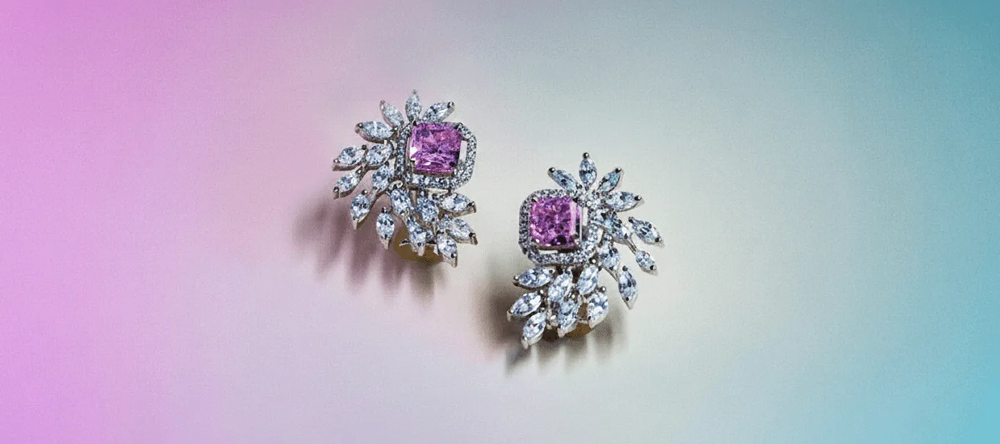

The Problem
Every year, thousands of diamond earrings are lost because of weak, unreliable earring backs. Friction backs loosen. Screw-ons, unscrew unknowingly to you, and slip off. Cheap silicon backs may lose their grip and fail (fall-off).
- A missing diamond.
- A broken heart.
- An expensive lesson.
The Solution—Diamond Earring Locks by Chrysmela Catch
If your earrings are worth hundreds and thousands of dollars — or priceless because they’re family heirlooms — why entrust your valuable earrings with conventional backs that may fail at some point without you even knowing!
Save Your Sparkle.
Chrysmela Catch - The Ultimate Locking Earring Backs
for Diamond Earrings.
Prevent Losing Your Precious Diamonds Forever with Patented Chrysmela Catch Earring Double Locking Technology.
Discover the best earring backs for real and lab-grown/ synthetic diamond earrings that outshine friction back earrings and troublesome screw-on backs that no one likes!
Shop Now and Protect Your Diamonds!The Heartbreak of Lost Diamonds: A Timeless Problem
Have you ever experienced the heartbreak of a diamond earring slipping off due to unreliable earring back types like basic earring posts and backs? Tired of flimsy — either plastic, silicone, and cheap metal replacement earring backs? It's a global issue affecting millions who love to wear their diamond earrings with peace of mind — from everyday to special occasions. Cheap earring backs, screw-on backs and other earring findings without a secure locking mechanism, creates lost heirlooms and costly replacements.
Imagine losing a priceless diamond stud earring while rushing through your day, or realizing one is missing after a night out. Losing a diamond earring can cost thousands of dollars to replace. We’ve all heard about horror stories of lost diamonds. It’s time to end that.
But here's the good news: Over 1.6 million earrings have been secured worldwide with a revolutionary solution - Chrysmela Catch earring locks secure your diamond earrings and provide peace of mind to let you wear your diamonds without fear.
Discover Chrysmela Catch: The World's Most
Secure Earring Back

Wear your heirloom diamond earrings anytime with peace of mind, turning everyday moments into opportunities to shine and sparkle!
Chrysmela Catch is the world's most secure earring back, designed specifically to replace all types of diamond earring backs, including screw backs. Chrysmela Catch for diamond stud earrings uses an innovative patented double-locking technology with three micro ball bearings that grip the post, as well as locking firmly into the end groove on 0.6-1.1mm posts as a secondary backup safety feature.
Unlike uncomfortable friction back and safety earring backs that can be annoying, bulky, and painful to wear. Chrysmela Catch is hypoallergenic, and every surface that touches your skin is perfectly smooth in pure precious metal. Available in 4 luxurious finishes to match your diamond earrings: bright gold, platinum, rose gold, and black titanium.
Why Women (and Jewelers) Love Chrysmela
Chrysmela supports all types of straight posts, 0.6-1.1mm in diameter, the widest range on the market as we know of.
Patented auto-locking mechanism
Holds securely until you choose to release. Easy to lock.
Universal fit on most posts
Automatically fits and locks most earrings posts (0.6 -1.1mm diameter).
Invisible
security
Elegant, small, and weight-balanced. For your peace of mind.
Beautiful finishes- available in 4 colors
Bright yellow gold, platinum, rose gold and black titanium.

Made in
Japan
Engineered for precision, trusted since 2008 in medical grade metal.
What Our Customers are Saying about their PEACE OF MIND with Chrysmela Catch for Diamond Earrings
Protect What You Love!
Every pair of diamond earrings tells a story — a milestone, a gift, a love remembered. With Chrysmela Diamond Earring Locks, your most treasured jewelry stays exactly where it belongs.
Whether you’re dressing for a wedding, a business meeting, or a day at the gym, you know your earrings will stay secure and sparkle most beautifully with you!

How to Use Chysmela Catch
Three Easy Steps to Peace of Mind
Slide your earring post into the Chrysmela Catch.
Hear the tiny but reassuring click.
To remove, pull the end lever to unlock.
That’s it — no twisting, no guessing, no fear.
Top 10 Reasons to Buy Chrysmela Catch
Why choose Chrysmela Catch for your diamond earrings? Chrysmela Catch is designed to deliver peace of mind and prevent the heartbreak and tragedy of diamond earring loss. Here are the top ten reasons, backed by real user experiences listed below and patented innovation.
Unmatched Security
The Patented locks prevent diamond earrings from falling off, unlike cheap friction backs, often unreliable earring screw-on backs, and hard to apply la pousette earring locks.
"These are the best, most secure earring backs that I’ve ever owned."
Julie Shields, Huntington Beach, California
Peace of Mind
Never worry about losing your real diamond earring again – trusted by over 1.6 million users worldwide.
"An age-old jewelry problem solved."
As Featured in People Magazine
Comfortable Earring Backs
Luxuriously smooth. No snag. No pulling of your hair. Designed for extended wear.
"Comfortable enough to sleep in – a game-changer!"
Jodi Roth, San Francisco, California
Instant Lift
Chrysmela Catch discs lift heavy diamonds, reducing strain on pierced ears, and preventing future enlarged piercings.
"Lifts my heavy studs perfectly, no more sagging."
Beth Jenkins, Columbus, Ohio
Hypoallergenic and Durable
Surgical stainless steel, the same material as doctor’s tools with premium finishes in 99.9% purity – bright gold, platinum, rose gold, noir titanium – to match any style.
"Hypoallergenic and feels luxurious on my sensitive ears."
Sally Wills-Smith, Austin, Texas
Easy to Use
Easy to apply on your diamond earring with a simple snap-on technique that beats using any other faulty earring safety backs or replacement earring backs.
"So easy to put on and take off – wish I had discovered this years ago."
Denise Yang, Brooklyn, New York
Versatile Compatibility
Fits most diamond studs automatically, and with Chrysmela Catch disc lifter adds extra support for heavy statement earrings.
One pair of Chrysmela replaces all your earring backs. Simple, universal solution makes Chrysmela the smart gift choice.
"Works with all my post earrings seamlessly."
Samantha Yes, San Diego, California
Fashion Freedom
Wear your diamonds anywhere without fear, solving the age-old problem of losing your valuable diamond earrings.
"I can run errands or exercise with my diamond earrings without a second thought."
Janene Duluth, Chicago, Illinois
Cost-Effective Protection
Secure your investments for under $69 compared to costly and expensive jeweler fees for a different post and back for your earrings.
"Amazing! Secured my diamond earrings for under $69 dollars compared to what a jeweler would charge."
Patricia Garcia, Boulder Colorado
Customer Raves
The best earring backs I've ever owned – a necessity for anyone that values their diamond earrings!
"I would give these 6 stars if allowed."
Samantha Brenk, Fairbanks Alaska
Wear your heirloom diamond earrings daily with peace of mind, turning everyday moments into sparkling opportunities.
“The Most Genius Jewelry Invention Ever."
“Chrysmela’s patented earring locks provide an even higher level of security for fine jewelry"
“An age old jewelry problem solved.”
Comparison Chart
-
Features/Benefits
-
Security
-
Fits Any Post
-
Ease of Use
-
Comfort
-
Aesthetics
-
Durability
-
Peace of Mind
-
Chrysmela Earring Locks
-
Patented auto-lock, double locking design
-
Yes – self-adjusting
-
Clicks on instantly
-
Lightweight, balanced
-
Invisible elegance
-
Years of use
-
Complete confidence
-
Friction Backs
-
Loosens over time
-
No
-
Push/bend to fit.
-
Uneven weight
-
Cheap stamped metal
-
Disposable
-
Constant worry
-
Screw-On Backs
-
Can unscrew or unwind
-
No
-
Time consuming
-
Bulky/Painful Ridges
-
Large, clunky
-
Comfort
-
Occasional slips
-
Silicone Backs
-
Weaken over time
-
Sometimes
-
Easy but unreliable
-
Soft
-
Cheap appearance
-
Disposable
-
Falls off easily
Top Tips on How to Prevent Losing Your Diamond Earrings From the experts at Chrysmela Catch:
Here are top tips to protect your beloved diamond earrings. Chrysmela Catch is the #1 solution to prevent loosing your valuable earrings due to the failure of conventional backs, and even the screw backs and la pousette earring backs.
Top Reasons to Switch to Chrysmela Catch:
The ultimate solution with double-locking earring post mechanism to replace unreliable earring backs. Upgrade and protect your diamond earrings today with Chrysmela Catch!
Choose Secure Lock Backs:
Opt for patented designs over basic friction back earrings. Chrysmela outperforms traditional options for your peace of mind!
Match Finishes:
Use bright gold finish, platinum finish, rose gold finish, or noir titanium for seamless integration with diamond earrings. Chrysmela blends perfectly with your collection!
Add Lift Discs:
For heavy diamond studs, prevent sagging earlobe and downward facing earring with comfortable, extra support of earring backs. Chrysmela Catch with disc.
Avoid Cheap Alternatives:
Say Good bye to all conventional earring backs and low quality Amazon Knockoffs made of cheap stamped metal, or silicon that may fail when you don’t notice. Invest in quality Chrysmela Catch diamond earring locks to avoid regrets of losing your heirloom and valuable earrings.
Wear Confidently:
Chrysmela Catch diamond earring locks allow for all-day security — from office to outdoors!
On the Go:
Chrysmela Catch’s patented earring post technology means less risk even in motion when exercising and traveling.
Educate on Findings:
Have you ever lost an earring and have you wondered why traditional and conventional earrings have failed you? Chrysmela Catch earring locks use the same precision technology behind smartphone cameras. Chrysmela is the only earring backs in the world as we know of, that automatically fits, locks and lifts all your earrings (0.8-1.1mm diameter).
Invest in Quality:
Chrysmela Catch provides peace of mind, preventing the too common occurrence of lost earrings. Secure your sparkle for good. Diamonds are forever with Chrysmela.
Choose Your Finish: Secure Your Diamonds Today!
Bright Gold
Platinum
Rose Gold
Noir Titanium
Designed for Luxury. Built for Life.
Chrysmela is trusted by women and jewelers in globally. Featured in Forbes, Magazine X, Magazine Y, Magazine Z, it’s the perfect blend of beauty, innovation, and peace of mind.
Stop Worrying.
Start Shining Today!
Don’t risk losing your diamond earrings ever again. Experience the world’s most advanced earring locks today.
BUY NOW ON AMAZONDiamond Earring Locks by Chrysmela Where Luxury Meets Security.
Press Release
Chrysmela Launches DiamondEarringLocksByChrysmela.com: Revolutionizing Diamond Earring Locks with the World's Most Secure Chrysmela Catch
New Dedicated Website Introduces Superior Locking Earrings and Secure Locks Better than Screw Backs, La Pousette Backs, Friction Backs, and Butterfly Backs—Made to Secure and Protect Your Valuable Earrings, and Save Your Diamonds.
Los Angeles, California – February 23, 2026 – Chrysmela, the pioneering Japanese brand renowned for its innovative earring security solutions, today announced the launch of its new website, www.DiamondEarringLocksByChrysmela.com. This specialized platform focuses on Diamond Earring Locks, featuring the patented Chrysmela Catch—the only earring back that fits, locks, and lifts. Designed specifically for diamond studs and diamond earrings, the new website empowers jewelry enthusiasts to enjoy their precious pieces with unparalleled confidence, eliminating the fear of loosing their diamond earrings during active lifestyles, travel, or everyday wear. Never worry about losing an earring again with Chrysmela Catch Diamond Earring Locks.
Building on two decades of expertise, Chrysmela has revolutionized the jewelry industry by addressing the age-old issue of lost earrings through precision-engineered technology. The Chrysmela Catch offers patented double-locking technology, utilizing three micro ball bearings for a primary grip and a secondary safety catch that secures the post's notch. This makes it far superior to traditional options: better than screw backs, which can loosen over time; better than La Pousette backs, which may be difficult to handle under pressure—when you are in a hurry, or your hands are too cold to hold them still and straight; better than friction backs that are prone to slippage; and better than butterfly backs, which offer pseudo security of pinching a thin metal. Made to secure and protect your valuable earrings in just one click, Chrysmela Catch saves your diamonds by providing an unbreakable hold on any straight posts, including screw posts, ranging from 0.6 to 1.1 mm in diameter.
The internal mechanism, crafted from hypoallergenic surgical stainless steel, is coated in 99.9% pure platinum or gold. Chrysmela secure locks for diamond earrings ensure comfort for all-day wear, including during exercise or sleep. Optional lifting discs provide instant support for heavier diamond pieces, preventing sagging and enhancing the earring's appearance. Chrysmela Catch is easy to use: simply push it through any earring post and feel it snap into place. To unlock, slide the tip of your fingernail under the top plate and gently pull away from the earring back. When you unlock it, Chrysmela Catch slides right off—offering effortless one-handed application and removal without compromising security. At Chrysmela, safeguarding your diamond earrings is more than a promise—it’s our passion.
The new website, www.DiamondEarringLocksByChrysmela.com, serves as a hub for diamond-specific solutions, highlighting enhanced grip for valuable posts, educational resources on earring security, and direct purchasing options. It builds on Chrysmela's global reputation, with over 1.6 million earrings protected worldwide and more than 4,000 positive reviews praising its innovation for diamond earrings. Jewelry lovers rave about the "genius jewelry invention" that allows "Fashion Freedom," turning special occasion diamonds into everyday essentials—whether running errands, attending events, or pursuing active hobbies.
"We are thrilled to introduce DiamondEarringLocksByChrysmela.com , a dedicated space for those who cherish their diamond collections," said Mayumi Ishii , USA Chief of Chrysmela. "Our Chrysmela Catch represents the pinnacle of locking earrings and secure locks, empowering wearers to save their diamonds and embrace true Fashion Freedom. When luxury meets lifestyle, this launch addresses the rising demand for reliable, hypoallergenic solutions that outperform outdated backs like screw, La Pousette, friction, and butterfly designs."
We welcome diamond jewelry enthusiasts to explore www.DiamondEarringLocksByChrysmela.com for product details, compatibility guides, and exclusive offers on Diamond Earring Locks. For the full range of Chrysmela products, including earring jackets and sets, visit the main site at https://chrysme.la/.
Chrysmela is a pioneering jewelry accessory brand made in Japan, revolutionizing earring security with patented technology. Visit https://chrysme.la/ for more information.
Media Contact
Jessica DelVirginia
Public Relations Manager
Chrysmela USA
Email: info@chrysme.la
Phone: 213-915-8160